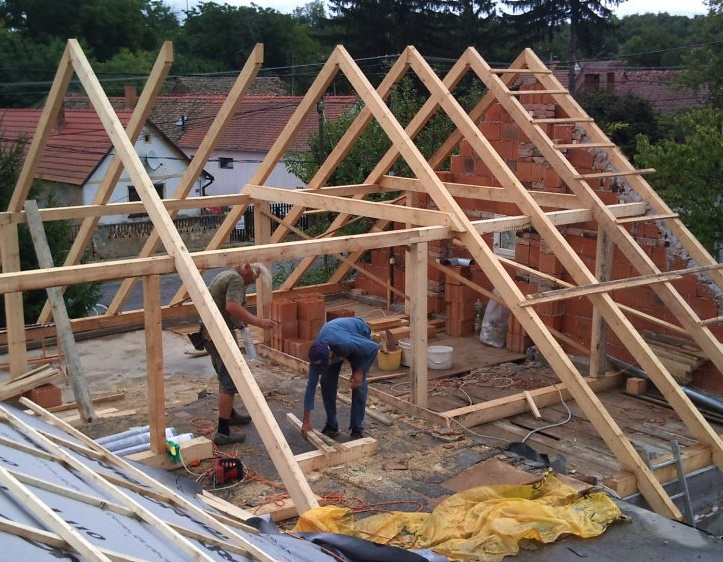

A különféle tetőkön mindenféle a csapadékvíz elvezetéssel kapcsolatos munkát elvégzünk. Családi házak, társas házak, ipari- és kereskedelmi épületek, egyéb létesítmények tetőfedő, bádogos munkáit vállaljuk. Teljes és részleges tetőfelújításokat, kisebb, nagyobb, javításokat vállalunk. A meredekebb tetőkön, lefolyócsöveknél, világító udvarokban, nehezen hozzáférhető helyeken ipari alpinista technológiát alkalmazunk.
Csatornák
Függőeresz, fekvőeresz, attika,
Összefolyók, gyűjtő üstök,
Hattyúnyak, betorkollás,
Kör- és négyszögcsövek,
Hajlat bádogozások.
Szegélyek
Eresz- és kéményszegélyek,
Oldal- és oromszegélyek,
Ablak- és futópárkányok
Hófogó rácsok, hótörők,
Kéményseprő járdák, létrák.
Tetőfedések
Cserépfedések,
Sajtolt és kolostor cserép,
Beton cserépfedés,
Sík és hullámpala,
Cserepes lemezfedés.
Lágyfedések
Bitumenes zsindely,
Hegesztett PVC,
EPDM gumilemez,
Szórt, felületvédett szigetelés,
Zöld tető, tetőterasz.
Cégünkről - 30 év tapasztalat
Csősz János tetőfedő-bádogos mester vállalkozó vagyok. 1969 óta dolgozom tetőn.
Tetőfedő és bádogos szakmákban letett mestervizsgáim után 1979-ben alapítottam vállalkozásomat. Az épületek csapadékvíz elvezetése a feladatunk, ennek minőségi kivitelezése változatlan és folyamatos a kezdetektől. Elsősorban Budapesten és környékén állunk rendelkezésére egyéni megrendelőknek, társasházaknak, közületeknek.
Munkatársaimmal vállaljuk új tetők bármilyen rendszerű fedését, régi tetők felújítását, javítását, viharkárok elhárítását.
Remélem hamarosan Ön is megrendelőnk lesz.
Minőségi munka, elégedett megrendelő, hosszú távú kapcsolat. - Csősz János bádogosmester
Technológiák - Személyre szabva
A tető hajlásszögéhez, formájához, tördeltségéhez, az uralkodó szélirányhoz, a kiválasztott anyagokhoz, valamint a megrendelő igényeihez alkalmazkodva a mindenkori szakmai előírások szerint végezzük munkánkat. Az ÉMSZ és az érvényes szabványok, és a gyártók előírásai szerint járunk el a kivitelezés során.
Az anyagokat első osztályban, ellenőrzött gyártótól, kereskedőtől megfelelőségi dokumentációval szerezzük be. A különböző márkák speciális beépítési technológiáit az általuk indított tanfolyamokon, továbbképzésein sajátítjuk el munkatársaimmal.
A lelkiismerettel, szakszerűen végzett munka vezet a jó minőséghez. Az általunk elvégzett munkákra, beszerzett és felszerelt anyagokra az építési törvényben előírt garanciát vállalunk.
Fakéregből is lehet jó tető, aranylemezzel is végezhető silány munka. - Csősz János bádogosmester

Technológiák bemutatása
Munkadíjak
Megnevezés
Költség
Csatornázás
600 Ft / fm
Szegélyezés
600 Ft / fm
Lefolyó szerelése
600 Ft / fm
Íves csatornázás
1000 Ft / fm
Cserép-, pala- és lágyfedés
2400 Ft / m2
Bontás (párkányok, csatorna, fal lefedések)
300 Ft / fm
Kiszállás, terepfelmérés, személyes konzultáció
ingyenes
A fel nem tüntetett munkálatokra - egyedi jellegük miatt - költséget csak a feladat pontos ismeretében lehet adni. Az árak az anyagköltséget és az ÁFA-t nem tartalmazzák.